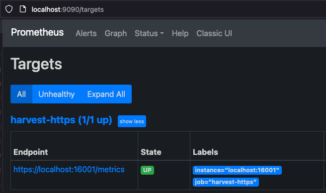

Prometheus Exporter¶
Prometheus Install
The information below describes how to setup Harvest's Prometheus exporter. If you need help installing or setting up Prometheus, check out their documentation.
Overview¶
The Prometheus exporter is responsible for:
- formatting metrics into the Prometheus line protocol
- creating a web-endpoint on
http://<ADDR>:<PORT>/metrics(orhttps:if TLS is enabled) for Prometheus to scrape
A web end-point is required because Prometheus scrapes Harvest by polling that end-point.
In addition to the /metrics end-point, the Prometheus exporter also serves an overview of all metrics and collectors
available on its root address scheme://<ADDR>:<PORT>/.
Because Prometheus polls Harvest, remember to update your Prometheus configuration and tell Prometheus how to scrape each poller.
How should I configure the Prometheus exporter?¶
There are several ways to configure the Prometheus exporter with various trade-offs outlined below:
- a per-poller prom_port in the
Pollerssection - a port range in the
Exporterssection - a single port in the
Exporterssection - embedded exporters in the
Pollerssection
We recommend the first two options, using a per-poller prom_port or port_range, since they work for the majority of
use cases and are the easiest to manage.
Use prom_port when you want the most control over the Prometheus port with the least amount of management.
Use port_range when you want Harvest to manage the port numbers for you,
but be aware that the port numbers depend on the order of pollers in your harvest.yml.
You need to keep that order consistent otherwise it will appear that you have lost data.
| Name | Pros | Cons | Notes |
|---|---|---|---|
| prom_port | Precisely control each Poller's Prometheus exporter port. The port is defined in one place, beside each poller. | You have to manage which port each poller should use. | Start with this until you outgrow it. Many folks never do. |
| port_range | Less to manage since Harvest assigns the port numbers for you based on the order of the pollers in your harvest.yml |
You need to be mindful of the order of pollers in your harvest.yml file and be careful about changing that order when adding/removing pollers. Reordering will cause the Prometheus port to change. Since Prometheus includes the port in the instance label, changing the port causes Prometheus to treat metrics with different ports as different instances. That means it will appear that you have lost data because the metrics with the new port are distinct from the metrics with the older port. See #2782 for details. |
Less to manage, but makes sure you understand how to control the order of your pollers. |
| port in Exporters | Precisely control each Poller's Prometheus exporter port. Can define multiple Prometheus exporters, each with custom configuration. |
Similar to prom_port but with an unnecessary level of indirection that makes you repeat yourself. |
Exporter that Harvest always shipped with. Most folks should use prom_port unless they need to configure many instances of the Prometheus exporter, which is rare. |
| embedded exporter | All the pros of port in Exporters but without the unnecessary indirection |
Removes the level of indirection and allows you to define the exporter in one place, but more verbose than per-poller prom_port. |
Most folks should use prom_port unless they need to configure many instances of the Prometheus exporter, which is rare. |
Parameters¶
All parameters of the exporter are defined in the Exporters section of harvest.yml.
An overview of all parameters:
| parameter | type | description | default |
|---|---|---|---|
add_meta_tags |
bool, optional | add HELP and TYPE metatags to metrics (currently no useful information, but required by some tools) |
false |
allow_addrs |
list of strings, optional | allow access only if host matches any of the provided addresses | |
allow_addrs_regex |
list of strings, optional | allow access only if host address matches at least one of the regular expressions | |
cache_max_keep |
string (Go duration format), optional | maximum amount of time metrics are cached (in case Prometheus does not timely collect the metrics) | 5m |
disk_cache |
object, optional | disk-based cache configuration | |
global_prefix |
string, optional | add a prefix to all metrics (e.g. netapp_) |
|
local_http_addr |
string, optional | address of the HTTP server Harvest starts for Prometheus to scrape: use localhost to serve only on the local machineuse 0.0.0.0 (default) if Prometheus is scrapping from another machine |
0.0.0.0 |
port_range |
int-int (range), overrides port if specified |
lower port to upper port (inclusive) of the HTTP end-point to create when a poller specifies this exporter. Starting at lower port, each free port will be tried sequentially up to the upper port. | |
port |
int, required if port_range is not specified | port of the HTTP end-point | |
sort_labels |
bool, optional | sort metric labels before exporting. VictoriaMetrics requires this otherwise stale metrics are reported. | false |
tls |
tls |
optional | If present, enables TLS transport. If running in a container, see note |
tls cert_file, key_file |
required child of tls |
Relative or absolute path to TLS certificate and key file. TLS 1.3 certificates required. FIPS complaint P-256 TLS 1.3 certificates can be created with bin/harvest admin tls create server, openssl, mkcert, etc. |
Per-poller prom_port¶
Define a Prometheus exporter in the Exporters section of your harvest.yml file, use that exporter in Defaults,
and then each poller lists its prom_port in the Pollers section.
Exporters:
my_prom:
exporter: Prometheus
add_meta_tags: true
sort_labels: true
Defaults:
auth_style: basic_auth
username: harvest
password: pass
exporters:
- my_prom
Then update your pollers in the Pollers section of your harvest.yml file.
Pollers:
cluster-01:
addr: 10.0.1.1
prom_port: 12990
cluster-02:
addr: 10.0.1.2
prom_port: 12991
Port Range¶
Port range works by defining a range of ports in the Exporters section of your harvest.yml file.
Harvest will assign the first available port in the range to each poller that uses the exporter.
That means you need to be careful about the order of your pollers in the harvest.yml file.
If you add or remove pollers, the order of the pollers may change, and the port assigned to each poller may change. To mitigate this:
- when you add new pollers to the
harvest.ymlfile, add them to the end of thePollerssection of yourharvest.ymlfile. - when you want to remove pollers, instead of deleting them, add the
disabled: trueparameter to the poller. The poller will not be started, but the port will be reserved. That way, the order of later pollers won't change.
Exporters:
prom-prod:
exporter: Prometheus
port_range: 2000-2030
Defaults:
exporters:
- prom-prod
Pollers:
cluster-01:
addr: 10.0.1.1
disabled: true # This poller will not be used
cluster-02:
addr: 10.0.1.2
cluster-03:
addr: 10.0.1.3
# ... more
cluster-16:
addr: 10.0.1.16
In the example above, fifteen pollers will collect metrics from 15 clusters
and make those metrics available to a single instance of Prometheus named prom-prod.
Fifteen web end-points will be created on the available free ports between 2000 and 2030 (inclusive).
Port 2000 will be assigned to cluster-01, port 2001 to cluster-02, and so on.
After starting the pollers in the example above, running bin/harvest status shows the following.
Since cluster-01 is disabled, it won't be started and its port will be skipped.
If no free port can be found, an error will
be logged.
Datacenter | Poller | PID | PromPort | Status
--------------+--------------+------+----------+----------
dc-01 | cluster-01 | 2339 | | disabled
dc-01 | cluster-02 | 2343 | 2001 | running
dc-01 | cluster-03 | 2351 | 2002 | running
...
dc-01 | cluster-14 | 2405 | 2013 | running
dc-01 | cluster-15 | 2502 | 2014 | running
dc-01 | cluster-16 | 2514 | 2015 | running
Single Port Exporter¶
Define a Prometheus exporter in the Exporters section of your harvest.yml file.
Give that exporter a port and update a single poller to use this exporter.
Each poller requires a different Prometheus exporter.
Exporters:
my_prom:
exporter: Prometheus
add_meta_tags: true
sort_labels: true
port: 12990
Then update a single poller in the Pollers section of your harvest.yml file to reference the Prometheus exporter.
Pollers:
cluster-01:
addr: 10.0.1.1
exporters:
- my_prom
Embedded Exporter¶
This example is similar to the single port exporter example,
but the exporter is defined in the Pollers section.
No need to define the exporter in the Exporters section.
Pollers:
cluster-01:
addr: 10.0.1.1
exporters:
- exporter: Prometheus
add_meta_tags: true
sort_labels: true
port: 12990
allow_addrs¶
Exporters:
my_prom:
allow_addrs:
- 192.168.0.102
- 192.168.0.103
Access will only be allowed from these two addresses.
allow_addrs_regex¶
Exporters:
my_prom:
allow_addrs_regex:
- `^192.168.0.\d+$`
Access will only be allowed from the IP4 range 192.168.0.0-192.168.0.255.
disk_cache¶
The disk_cache parameter enables disk-based staging of metrics before they are served to Prometheus. Instead of storing formatted metrics in memory, Harvest flushes them to disk files. When Prometheus scrapes the /metrics endpoint, Harvest reads these cached files from disk and streams them directly to Prometheus. This approach reduces memory overhead, making it ideal for large deployments with many metrics.
Configuration:
The disk_cache parameter requires a path field that specifies the directory where cache files will be stored. The path is mandatory when using disk cache.
Notes:
- The
pathis required when usingdisk_cache - Harvest will automatically create a subdirectory for each poller to avoid conflicts between multiple pollers
- The cache directory is cleared on startup
- Ensure the specified directory is writable by the Harvest process
Example:
Exporters:
prom_disk:
exporter: Prometheus
port_range: 13000-13100
disk_cache:
path: /var/lib/harvest/cache
Pollers:
cluster-01:
addr: 10.0.1.1
exporters:
- prom_disk
cluster-02:
addr: 10.0.1.2
exporters:
- prom_disk
In this example, cache files will be created in:
- /var/lib/harvest/cache/cluster-01/
- /var/lib/harvest/cache/cluster-02/
Configure Prometheus to scrape Harvest pollers¶
There are two ways to tell Prometheus how to scrape Harvest: using HTTP service discovery (SD) or listing each poller individually.
HTTP service discovery is the more flexible of the two. It is also less error-prone, and easier to manage. Combined with the port_range configuration described above, SD is the least effort to configure Prometheus and the easiest way to keep both Harvest and Prometheus in sync.
NOTE HTTP service discovery does not work with Docker yet. With Docker, you will need to list each poller individually or if possible, use the Docker Compose workflow that uses file service discovery to achieve a similar ease-of-use as HTTP service discovery.
See the example below for how to use HTTP SD and port_range together.
Prometheus HTTP Service Discovery¶
HTTP service discovery was introduced in Prometheus version 2.28.0. Make sure you're using that version or later.
The way service discovery works is:
- shortly after a poller starts up, it registers with the SD node (if one exists)
- the poller sends a heartbeat to the SD node, by default every 45s.
- if a poller fails to send a heartbeat, the SD node removes the poller from the list of active targets after a minute
- the SD end-point is reachable via SCHEMA://
/api/v1/sd
To use HTTP service discovery you need to:
- tell Harvest to start the HTTP service discovery process
- tell Prometheus to use the HTTP service discovery endpoint
Enable HTTP service discovery in Harvest¶
Add the following to your harvest.yml
Admin:
httpsd:
listen: :8887
This tells Harvest to create an HTTP service discovery end-point on interface 0.0.0.0:8887. If you want to only listen
on localhost, use 127.0.0.1:<port> instead. See net.Dial for details on the supported
listen formats.
Start the SD process by running bin/harvest admin start. Once it is started, you can curl the end-point for the list
of running Harvest pollers.
curl -s 'http://localhost:8887/api/v1/sd' | jq .
[
{
"targets": [
"10.0.1.55:12990",
"10.0.1.55:15037",
"127.0.0.1:15511",
"127.0.0.1:15008",
"127.0.0.1:15191",
"10.0.1.55:15343"
]
}
]
Harvest HTTP Service Discovery options¶
HTTP service discovery (SD) is configured in the Admin > httpsd section of your harvest.yml.
| parameter | type | description | default |
|---|---|---|---|
listen |
required | Interface and port to listen on, use localhost:PORT or :PORT for all interfaces | |
auth_basic |
optional | If present, enables basic authentication on /api/v1/sd end-point |
|
auth_basic username, password |
required child of auth_basic |
||
tls |
optional | If present, enables TLS transport. If running in a container, see note | |
tls cert_file, key_file |
required child of tls |
Relative or absolute path to TLS certificate and key file. TLS 1.3 certificates required. FIPS complaint P-256 TLS 1.3 certificates can be created with bin/harvest admin tls create server |
|
ssl_cert, ssl_key |
optional if auth_style is certificate_auth |
Absolute paths to SSL (client) certificate and key used to authenticate with the target system. If not provided, the poller will look for <hostname>.key and <hostname>.pem in $HARVEST_HOME/cert/.To create certificates for ONTAP systems, see using certificate authentication |
|
heart_beat |
optional, Go Duration format | How frequently each poller sends a heartbeat message to the SD node | 45s |
expire_after |
optional, Go Duration format | If a poller fails to send a heartbeat, the SD node removes the poller after this duration | 1m |
Enable HTTP service discovery in Prometheus¶
Edit your prometheus.yml and add the following section
$ vim /etc/prometheus/prometheus.yml
scrape_configs:
- job_name: harvest
http_sd_configs:
- url: http://localhost:8887/api/v1/sd
Harvest and Prometheus both support basic authentication for HTTP SD end-points. To enable basic auth, add the following to your Harvest config.
Admin:
httpsd:
listen: :8887
# Basic auth protects GETs and publishes
auth_basic:
username: admin
password: admin
Don't forget to also update your Prometheus config with the matching basic_auth credentials.
Prometheus HTTP Service Discovery and Port Range¶
HTTP SD combined with Harvest's port_range feature leads to significantly less configuration in your harvest.yml.
For example, if your clusters all export to the same Prometheus instance, you can refactor the per-poller exporter into
a single exporter shared by all clusters in Defaults as shown below:
Notice that none of the pollers specify an exporter. Instead, all the pollers share the single exporter
named prometheus-r listed in Defaults. prometheus-r is the only exporter defined and as specified will manage up
to 1,000 Harvest Prometheus exporters.
If you add or remove more clusters in the Pollers section, you do not have to change Prometheus since it dynamically
pulls the targets from the Harvest admin node.
Admin:
httpsd:
listen: :8887
Exporters:
prometheus-r:
exporter: Prometheus
port_range: 13000-13999
Defaults:
collectors:
- Zapi
- ZapiPerf
use_insecure_tls: false
auth_style: password
username: admin
password: pass
exporters:
- prometheus-r
Pollers:
umeng_aff300:
datacenter: meg
addr: 10.193.48.11
F2240-127-26:
datacenter: meg
addr: 10.193.6.61
# ... add more clusters
Static Scrape Targets¶
If we define two Prometheus exporters at ports: 12990 and 14567 in the harvest.yml file like so, you need to add two targets to your prometheus.yml too.
$ vim harvest.yml
Exporters:
prometheus1:
exporter: Prometheus
port: 12990
prometheus2:
exporter: Prometheus
port: 14567
Pollers:
cluster1:
addr: 10.0.1.1
username: user
password: pass
exporters:
- prometheus1
cluster2:
addr: 10.0.1.1
username: user
password: pass
exporters:
- prometheus2
$ vim /etc/prometheus/prometheus.yml
Scroll down to near the end of the file and add the following lines:
- job_name: 'harvest'
scrape_interval: 60s
static_configs:
- targets:
- 'localhost:12990'
- 'localhost:14567'
NOTE If Prometheus is not on the same machine as Harvest, then replace localhost with the IP address of your
Harvest machine. Also note the scrape interval above is set to 1m. That matches the polling frequency of the default
Harvest collectors. If you change the polling frequency of a Harvest collector to a lower value, you should also change
the scrape interval.
Prometheus Exporter and TLS¶
The Harvest Prometheus exporter can be configured to serve its metrics via HTTPS by configuring the tls section in
the Exporters section of harvest.yml.
Let's walk through an example of how to set up Harvest's Prometheus exporter and how to configure Prometheus to use TLS.
Generate TLS Certificates¶
We'll use Harvest's admin command line tool to create a self-signed TLS certificate key/pair for the exporter and Prometheus. Note: If running in a container, see note.
cd $Harvest_Install_Directory
bin/harvest admin tls create server
2023/06/23 09:39:48 wrote cert/admin-cert.pem
2023/06/23 09:39:48 wrote cert/admin-key.pem
Two files are created. Since we want to use these certificates for our Prometheus exporter, let's rename them to make that clearer.
mv cert/admin-cert.pem cert/prom-cert.pem
mv cert/admin-key.pem cert/prom-key.pem
Configure Harvest Prometheus Exporter to use TLS¶
Edit your harvest.yml and add a TLS section to your exporter block like this:
Exporters:
my-exporter:
local_http_addr: localhost
exporter: Prometheus
port: 16001
tls:
cert_file: cert/prom-cert.pem
key_file: cert/prom-key.pem
Update one of your Pollers to use this exporter and start the poller.
Pollers:
my-cluster:
datacenter: dc-1
addr: 10.193.48.11
exporters:
- my-exporter # Use TLS exporter we created above
When the poller is started, it will log whether https or http is being used as part of the url like so:
bin/harvest start -f my-cluster
2023-06-23T10:02:03-04:00 INF prometheus/httpd.go:40 > server listen Poller=my-cluster exporter=my-exporter url=https://localhost:16001/metrics
If the url schema is https, TLS is being used.
You can use curl to scrape the Prometheus exporter and verify that TLS is being used like so:
curl --cacert cert/prom-cert.pem https://localhost:16001/metrics
# or use --insecure to tell curl to skip certificate validation
# curl --insecure cert/prom-cert.pem https://localhost:16001/metrics
Configure Prometheus to use TLS¶
Let's configure Prometheus to use HTTPs to communicate with the exporter setup above.
Edit your prometheus.yml and add or adapt your scrape_configs job. You need to add scheme: https and setup a tls_config
block to point to the earlier created prom-cert.pem like so:
scrape_configs:
- job_name: 'harvest-https'
scheme: https
tls_config:
ca_file: /path/to/prom-cert.pem
static_configs:
- targets:
- 'localhost:16001'
Start Prometheus and visit http://localhost:9090/targets with your browser. You should see https://localhost:16001/metrics in the list of targets.

Prometheus Alerts¶
Prometheus includes out-of-the-box support for simple alerting. Alert rules are configured in your prometheus.yml
file. Setup and details can be found in the Prometheus
guide on alerting.
Harvest also includes EMS and sample alerts for reference. Refer to the EMS Collector for more details about EMS events. Refer to the EMS alert runbook for descriptions and remediation steps.
Alertmanager¶
Prometheus's builtin alerts are good for simple workflows. They do a nice job telling you what's happening at the moment. If you need a richer solution that includes summarization, notification, advanced delivery, deduplication, etc. checkout Alertmanager.